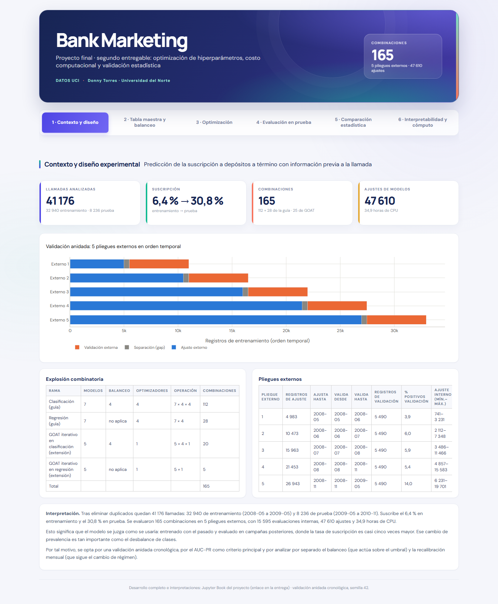

Pestaña 1 · Contexto y diseño experimental#
La primera pestaña presenta el problema, la partición cronológica y el diseño experimental: cuántas combinaciones se entrenan y cómo se valida cada una sin sesgo de selección.

Las figuras son interactivas (se puede pasar el cursor sobre ellas) y las interpretaciones usan las mismas cifras que el dashboard y que el cuaderno.
1.1 Cifras del proyecto y esquema de validación anidada#
| Indicador | Valor |
|---|---|
| Llamadas tras eliminar duplicados | 41 176 |
| Entrenamiento | 32 940 (2008-05 a 2009-05) |
| Prueba | 8 236 (2009-05 a 2010-11) |
| Suscripción en entrenamiento | 6,4 % |
| Suscripción en prueba | 30,8 % |
| Combinaciones | 165 |
| Evaluaciones internas | 15 595 |
| Ajustes de modelos | 47 610 |
| Horas de CPU | 34,9 |
| Rama | Modelos | Balanceo | Optimizadores | Operación | Combinaciones |
|---|---|---|---|---|---|
| Clasificación (guía) | 7 | 4 | 4 | 7 × 4 × 4 | 112 |
| Regresión (guía) | 7 | no aplica | 4 | 7 × 4 | 28 |
| GOAT iterativo en clasificación (extensión) | 5 | 4 | 1 | 5 × 4 × 1 | 20 |
| GOAT iterativo en regresión (extensión) | 5 | no aplica | 1 | 5 × 1 | 5 |
| Total | 165 |
| Pliegue externo | Registros de ajuste | Ajusta hasta | Valida desde | Valida hasta | Registros de validación | % positivos validación | Ajuste interno (mín.–máx.) | Validación interna |
|---|---|---|---|---|---|---|---|---|
| 1 | 4 983 | 2008-05 | 2008-05 | 2008-06 | 5 490 | 3,9 | 741–3 231 | 1 245 |
| 2 | 10 473 | 2008-06 | 2008-06 | 2008-07 | 5 490 | 6,0 | 2 112–7 348 | 2 618 |
| 3 | 15 963 | 2008-07 | 2008-07 | 2008-08 | 5 490 | 5,9 | 3 486–11 466 | 3 990 |
| 4 | 21 453 | 2008-08 | 2008-08 | 2008-11 | 5 490 | 5,4 | 4 857–15 583 | 5 363 |
| 5 | 26 943 | 2008-11 | 2008-11 | 2009-05 | 5 490 | 14,0 | 6 231–19 701 | 6 735 |
Interpretación. Tras eliminar duplicados quedan 41 176 llamadas: 32 940 de entrenamiento (2008-05 a 2009-05) y 8 236 de prueba (2009-05 a 2010-11). Suscribe el 6,4 % en entrenamiento y el 30,8 % en prueba. Se evaluaron 165 combinaciones en 5 pliegues externos, con 15 595 evaluaciones internas, 47 610 ajustes y 34,9 horas de CPU.
Esto significa que el modelo se juzga como se usaría: entrenado con el pasado y evaluado en campañas posteriores, donde la tasa de suscripción es casi cinco veces mayor. Ese cambio de prevalencia es tan importante como el desbalance de clases.
Por tal motivo, se opta por una validación anidada cronológica, por el AUC-PR como criterio principal y por analizar por separado el balanceo (que actúa sobre el umbral) y la recalibración mensual (que sigue el cambio de régimen).